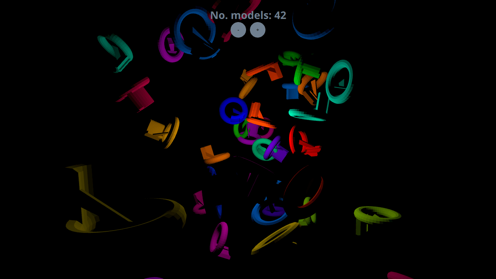

Qt Quick 3D - Dynamic Model Creation Example
Demonstrates dynamic model creation.
This example demonstrates creating models dynamically in an application. 10 models are created dynamically at the start of the application, and more can be added or removed using the + and - buttons.

Setting Up
Spawner Node
We are going to need a Node to hold the dynamically created models.
Node { id: shapeSpawner property real range: 300 property var instances: [] property int count ...
Startup
We're creating 10 models at Component.onCompleted so the example shows something at startup.
Component.onCompleted: { for (var i = 0; i < 10; ++i) shapeSpawner.addShape() }
Dynamic Models
Adding Models
In order to add a new item to the scene, we first use the Qt.createComponent function to create a Component for our model. Then we use the component's createObject function to instantiate the item, passing in the position and scale as parameters.
function addShape() { var xPos = (2 * Math.random() * range) - range; var yPos = (2 * Math.random() * range) - range; var zPos = (2 * Math.random() * range) - range; var shapeComponent = Qt.createComponent("WeirdShape.qml"); let instance = shapeComponent.createObject(shapeSpawner, { "x": xPos, "y": yPos, "z": zPos, "scale": Qt.vector3d(0.25, 0.25, 0.25)}); instances.push(instance); count = instances.length }
Removing Models
Dynamically created models are removed simply by popping and destroying them from the instance stack.
function removeShape() { if (instances.length > 0) { let instance = instances.pop(); instance.destroy(); count = instances.length } }
Files:
- dynamiccreation/CMakeLists.txt
- dynamiccreation/Example/WeirdShape.qml
- dynamiccreation/Example/dynamiccreation_qml_module_dir_map.qrc
- dynamiccreation/Example/main.qml
- dynamiccreation/Example/qmldir
- dynamiccreation/WeirdShape.qml
- dynamiccreation/dynamiccreation.pro
- dynamiccreation/main.cpp
- dynamiccreation/main.qml
- dynamiccreation/qml.qrc